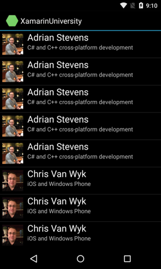

Durée
15 minutes
Objectifs
L'objectif de cet atelier est d'améliorer l'efficacité de votre adapter personnalisé en utilisant deux techniques Android communes : layout recycling et le pattern view-holder .
L'application achevée est affichée ci-dessous. Elle comprend des formateurs en double pour fournir suffisamment de données pour activer le défilement et le recyclage de vue.
Ci-dessous une description des tâches nécessaires pour réaliser cet exercice.
-
Augmentez la quantité de données pour que la
ListViewdevienne scrollable. Le moyen le plus facile de le faire est d'utiliser des données de formateur en double. Lorsque vous faites cela, vous aurez probablement besoin de mettre en cache et réutiliser les images du formateur pour préserver la mémoire. -
Modifier la méthode de
GetViewde votre adapter pour réutiliser le paramètreconvertViewparameter quand il est non-null au lieu d'ajouter un nouveau layout. -
Modifier la méthode
GetViewde votre adapter pour qu'elle n'utilise pasFindViewByIdpour retrouver de multiple fois les vues au sein du layout. Réalisez une seule fois la recherche quanfd vous augmentez le layout et mettez en cache les références au sein d'un objet holder que vous chargez dans la propriétéTagdu Layout.
Required assets
The provided Part 04 Resources folder contains resources that you will need in order to complete the lab, including a completed version of the project to compare your final work against.
-
The file ImageAssetManager.cs contains a simple class that creates a
Drawablefrom an image file packaged as an Android Asset. It maintains a dictionary keyed by the image filename so it will create exactly one copy of each image. - The file ViewHolder.cs contains a class that contains nothing but three properties, one for each view in the InstructorRow.axml layout file. This will be used to implement the view-holder pattern.
Please make sure you have this folder before you begin.
Steps
Below are the step-by-step instructions to implement the exercise.
Add more data
-
Open InstructorData.cs. Uncomment the extra calls to
AddInstructorsso the amount of data will be large enough that theListViewwill be scrollable. TheListViewwill then start recycling the layouts that scroll off the screen. -
Add the file ImageAssetManager.cs from the Part 04 Resources folder
to the project. Open the file and look at the
Getmethod: you pass it a Context and a path relative to your Assets folder and it returns the file as aDrawable. -
Modify your
InstructorAdapter.GetViewmethod to useImageAssetManager.Getto load the instructor's photo. -
Run the app to test your work. The row layout should look the same but you should see multiple
copies of each instructor. The data is sorted by name so the multiple copies will be adjacent.
The
ListViewhas built-in scrolling; scroll the app to verify this.
Use layout recycling
There is overhead involved in creating a row for a ListView. You first inflate your
chosen layout file, then you use FindViewById to get references to the views in the
layout, and finally you populate the views with your code-behind data.
ListView tries to reduce this overhead by reusing the instantiated layouts: as one
row scrolls off the screen, that layout becomes available for reuse. When ListView
calls your adapter's GetView method, it sometimes passes an old layout to you in the
convertView parameter for you to reuse. You still need to do the other steps
(get references to the views inside the layout and populate the views with your code-behind data)
but this reduces the amount of work required and reduces the pressure on the garbage collector.
-
Open InstructorAdapter.cs and locate your
GetViewmethod. -
Modify
GetViewto use view recycling. If theconvertViewparameter is non-null you should reuse it. If it is null, you should inflate a new layout.
Use the view-holder pattern
Recall that there are three steps to create a row for a ListView: inflate the layout
file, lookup the views within the layout, and populate the views with data. Layout recycling addressed
the first of these. Here, we use the view-holder pattern to address the second. We will lookup the
views in the layout file only once when the layout is inflated. Then we will cache the references
for later use when the layout is recycled.
-
Add the file ViewHolder.cs from the Part 04 Resources folder
to the project. Open the file and look at the class definition. Notice that its base class
is
Java.Lang.Object; this is required to store an instance of this class in theTagfield of a view. -
Open InstructorAdapter.cs and locate your
GetViewmethod. -
Modify
GetViewto use the view-holder pattern. When you first inflate the layout file, useFindViewByIdto get references to the views within the layout. Create aViewHolderobject, populate it with the view references, and store it in theTagproperty of the layout. When you populate the views with your code-behind data, use the references in the holder instead of looking them up again withFindViewById. -
Run the app to test your work. Scroll the app to make sure your
GetViewmethod is still working correctly. It should look the same as before since we only added efficiency optimizations and did not change the UI.
Résumé
Cet exercice a implémenté deux techniques Android communes pour améliorer l'efficacité to de votre adpater personnalisé.
Le recyclage de mise en page augmente la vitesse et réduit l'utilisation de la mémoire par la réutilisation des mises en page
au lieu d'en créer de nouveau pour chaque ligne. Le View holder augmente la vitesse en minimisant le nombre d'appels à FindViewById .
Layout recycling increases speed and reduces memory usage by
reusing layouts instead of creating a new one for each row. View holder increases speed
by minimizing the number of calls to FindViewById. Les deux techniques fonctionnent bien ensembles et peuvent faire une grande différence
dans la capacité d'une ListView à gérer de grandes collections.